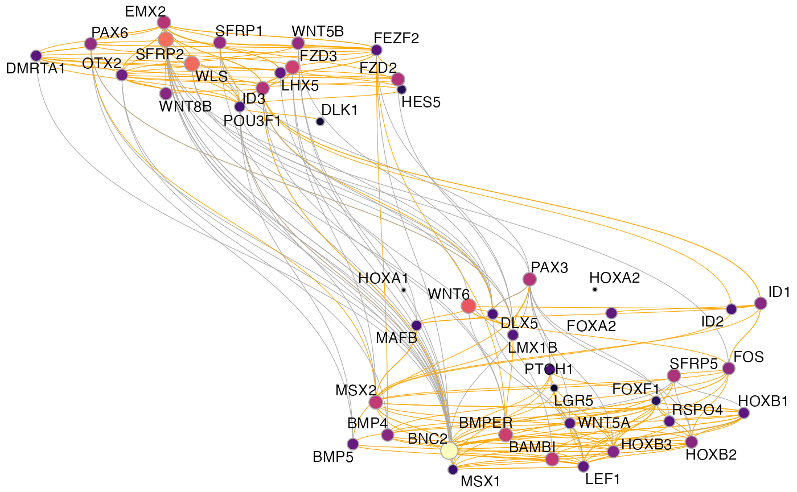
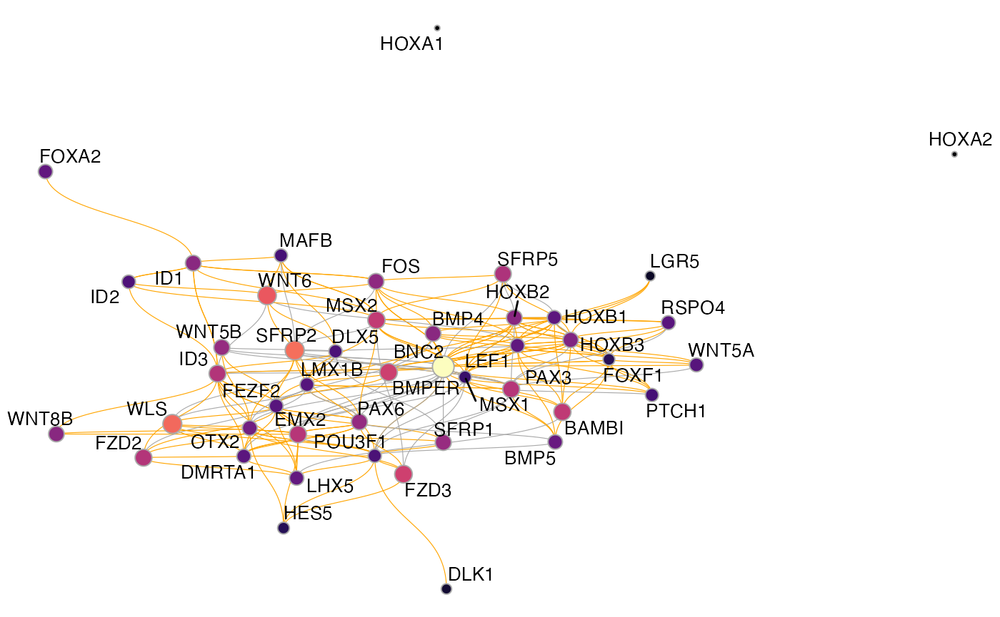

Getting started with Pando
Jonas Simon Fleck
17/05/2022
getting_started.RmdThis vignette gives you an introduction to the Pando workflow and gives a broad overview of the functionality. Pando is a package to infer gene regulatory networks (GRNs) from multiome data, specifically scRNA-seq and scATAC-seq. It’s is designed to interact with Seurat objects and relies on functionality from both Seurat and Signac.
Ok, so let’s get started. First we need a Seurat object that has both RNA and ATAC modalities with gene expression and chromatin accessibility measurements, respectively. Here we use multiome data from early brain orgnaoid development
muo_data <- read_rds('muo_data.rds')
muo_data## An object of class Seurat
## 173554 features across 4000 samples within 2 assays
## Active assay: peaks (141639 features, 141639 variable features)
## 1 other assay present: RNA
## 3 dimensional reductions calculated: pca, umap, lsi
So let’s see if we got everything we need. We have an RNA assay with gene expression…
muo_data[['RNA']]## Assay data with 31915 features for 4000 cells
## Top 10 variable features:
## TAGLN, POU5F1, SST, THSD7B, AC106864.1, PAX2, MT1G, KCNIP4, FGF8, MIXL1…and also a ChomatinAssay with the ATAC data. Also we can see that we have a gene annotation already in the object. This will be important for Pando later.
muo_data[['peaks']]## ChromatinAssay data with 141639 features for 4000 cells
## Variable features: 141639
## Genome:
## Annotation present: TRUE
## Motifs present: FALSE
## Fragment files: 0Initiating the GRN
The first step in the Pando workflow is to initiate the GRN with initiate_grn(). This function also takes care of pre-selecting candidate regulatory regions to consider for GRN inference. This is optional, but in our experience constraining the set of peaks to more confident regions cuts down on runtime and makes the resulting GRN more robust. Similar to what we’ve done in our preprint we will here select conserved regions in mammals. The necessary data is already included in Pando:
data('phastConsElements20Mammals.UCSC.hg38')
muo_data <- initiate_grn(
muo_data,
rna_assay = 'RNA',
peak_assay = 'peaks',
regions = phastConsElements20Mammals.UCSC.hg38
)
We have now added a RegulatoryNetwork object to the Seurat object. Also, you might notice that the new object is now called SeuratPlus.
muo_data## An object of class SeuratPlus
## 173554 features across 4000 samples within 2 assays
## Active assay: peaks (141639 features, 141639 variable features)
## 1 other assay present: RNA
## 3 dimensional reductions calculated: pca, umap, lsi
GetGRN(muo_data)## A RegulatoryNetwork object
## Candidate regions have not been scanned for motifs
##
## No network has been inferred
We can also inspect the candidate regulatory regions that we have selected:
regions <- NetworkRegions(muo_data)
regions@ranges## GRanges object with 282874 ranges and 0 metadata columns:
## seqnames ranges strand
## <Rle> <IRanges> <Rle>
## [1] chr1 911275-911316 *
## [2] chr1 916688-916752 *
## [3] chr1 916755-916788 *
## [4] chr1 916811-916864 *
## [5] chr1 921178-921198 *
## ... ... ... ...
## [282870] chrY 6909218-6909408 *
## [282871] chrY 13751920-13752007 *
## [282872] chrY 13753848-13753884 *
## [282873] chrY 13803082-13803229 *
## [282874] chrY 14522517-14522564 *
## -------
## seqinfo: 308 sequences from an unspecified genome; no seqlengthsScanning for motifs
The next step is to scan the candidate regions for TF binding motifs, in order to have some idea where TFs might potentially bind. In Pando, this is done with the function find_motifs(). In addition to the SeuratPlus object the function needs the genome and motif info in form of a PFMatrixList. Pando already provides a curated motif collection, but you can of course supply your own. If you choose to do so, you also need to proved a dataframe mapping motif IDs (1st column) to TF names (2nd column) with the motif_tfs argument. Also, if you want to infer the GRN only for a subset of TFs, you can constrain it with this function.
Here, we use the motifs provided by Pando, but constrain them to only contain genes involved in patterning:
pattern_tfs <- patterning_genes %>%
filter(type=='Transcription factor') %>%
pull(symbol)
motif2tf_use <- motif2tf %>%
filter(tf %in% pattern_tfs)
motifs_use <- motifs[unique(motif2tf_use$motif)]
motif2tf_use## # A tibble: 216 x 8
## motif tf origin gene_id family name symbol motif_tf
## <chr> <chr> <chr> <chr> <chr> <chr> <chr> <lgl>
## 1 M01722_2.00 HEYL CIS-BP ENSG00000163909 bHLH <NA> <NA> NA
## 2 M02790_2.00 HEYL CIS-BP ENSG00000163909 bHLH <NA> <NA> NA
## 3 M02791_2.00 HEYL CIS-BP ENSG00000163909 bHLH <NA> <NA> NA
## 4 M04131_2.00 HEYL CIS-BP ENSG00000163909 bHLH <NA> <NA> NA
## 5 M04132_2.00 HEYL CIS-BP ENSG00000163909 bHLH <NA> <NA> NA
## 6 M04133_2.00 HEYL CIS-BP ENSG00000163909 bHLH <NA> <NA> NA
## 7 M04134_2.00 HEYL CIS-BP ENSG00000163909 bHLH <NA> <NA> NA
## 8 M08714_2.00 TAL2 CIS-BP ENSG00000186051 bHLH <NA> <NA> NA
## 9 M08734_2.00 TAL2 CIS-BP ENSG00000186051 bHLH <NA> <NA> NA
## 10 M08759_2.00 TAL2 CIS-BP ENSG00000186051 bHLH <NA> <NA> NA
## # … with 206 more rows
Using these TF motifs, we can now scan the candidate regions:
library(BSgenome.Hsapiens.UCSC.hg38)
muo_data <- find_motifs(
muo_data,
pfm = motifs_use,
motif_tfs = motif2tf_use,
genome = BSgenome.Hsapiens.UCSC.hg38
)
Our Regions object has now gotten a new slot containing the Motif object. This object stores a sparse peak x motif matrix with the matches and some other information.
regions <- NetworkRegions(muo_data)
regions@motifs@data[1:5,1:5]## 5 x 5 sparse Matrix of class "dgCMatrix"
## M01722_2.00 M02790_2.00 M02791_2.00 M04131_2.00 M04132_2.00
## chr1-911275-911316 . . . . .
## chr1-916688-916752 . . . . .
## chr1-916755-916788 . . . . .
## chr1-916811-916864 . . . . .
## chr1-921178-921198 . . . . .Inferring the GRN
Now we should have everything ready to infer the GRN. GRN inference in Pando is very much inspired by other methods such as SCENIC. These methods assume that the expression of a gene can be modeled by a function of the expression of the TFs that regulate it. Pando extends this notion to harness multiome measurements by considering co-accessibility in addition to co-expression. The underlying idea is that in order for a TF to regulate a gene, the TF needs to be expressed and the binding peak needs to be accessible. For this, Pando fits one regression model per gene, and models its expression based on TF expression and accessibility of the binding peaks. These TF-peak interactions are additively combined. If you are familiar with the R formula syntax, you might recognize something like this:
PAX6 ~ HES4*chr1-911275-911316 + OTX2*chr1-921178-921198 + MSX2*chr1-921178-921198 + ...In this example, PAX6 expression is modeled by adding up the TF-peak interactions of HES4, OTX2 and MSX2.
The function infer_grn() takes care of fitting these models for all genes and identifies significant connections between TF-region pairs and target gene expression. With the genes argument, we can select a subset of genes that we want to use for GRN inference. Here we stick with the theme above and use pattering-related genes. This is of course optional, but for runtime reasons we recommend to constrain the set of genes somehow, e.g. by using VariableFeatures(). Also, we use the method used by GREAT to associate genes with peaks and parallelize the computation using 4 cores:
library(doParallel)
registerDoParallel(4)
muo_data <- infer_grn(
muo_data,
peak_to_gene_method = 'GREAT',
genes = patterning_genes$symbol,
parallel = T
)infer_grn() has many more parameters to choose different models or tweak the association between peaks and genes, but we’ll go into this in another vignette.
The inferred Network object can be accessed with GetNetwork()
GetNetwork(muo_data)## A Network object
## with 57 TFs and 122 target genesand the parameters of the models can be inspected with coef(). This returns a dataframe coefficients (estimate) and p-values (pval) for each TF/region-target gene pair:
coef(muo_data)## # A tibble: 3,804 x 10
## tf target region term estimate std_err statistic pval padj corr
## <chr> <chr> <chr> <chr> <dbl> <dbl> <dbl> <dbl> <dbl> <dbl>
## 1 DMRTA1 IRS4 chrX-1… chrX_… 0.0417 0.0157 2.65 0.00801 0.0440 0.128
## 2 DMRTA1 IRS4 chrX-1… DMRTA… 0.0155 0.0184 0.844 0.399 0.671 0.128
## 3 DMRTA1 IRS4 chrX-1… DMRTA… 0.0499 0.0237 2.10 0.0354 0.138 0.128
## 4 BNC2 FGF13 chrX-1… chrX_… -0.0111 0.0214 -0.521 0.602 0.814 -0.143
## 5 BNC2 FGF13 chrX-1… BNC2:… -0.0110 0.0237 -0.465 0.642 0.840 -0.143
## 6 ID3 FGF13 chrX-1… chrX_… -0.0181 0.0220 -0.821 0.412 0.685 0.125
## 7 ID3 FGF13 chrX-1… ID3:c… 0.0519 0.0477 1.09 0.277 0.555 0.125
## 8 EMX2 FGF13 chrX-1… chrX_… 0.00191 0.0549 0.0347 0.972 0.993 0.120
## 9 OTX2 FGF13 chrX-1… chrX_… 0.0844 0.0342 2.47 0.0137 0.0669 0.106
## 10 ID3 FGF13 chrX-1… ID3:c… 0.00820 0.0220 0.373 0.709 0.879 0.125
## # … with 3,794 more rowsModule discovery
Using the inferred parameters, we can now use find_modules() to construct TF modules, i.e. the set of genes that are regulated by each transcription factor. How exactly this is done depends on the model choice in infer_grn(), but generally Pando chooses the most confident connections for each TF. The function allows setting different selection criteria like a p-value threshold or an \(R^2\) threshold to filter models by goodness-of-fit. For the purpose of this tutorial we will choose rather lenient thresholds:
muo_data <- find_modules(
muo_data,
p_thresh = 0.1,
nvar_thresh = 2,
min_genes_per_module = 1,
rsq_thresh = 0.05
)
The Modules object can be accessed with NetworkModules(). The meta slot contains meta data about the module network and lists with feature sets for each TF can be accessed in the features slot.
modules <- NetworkModules(muo_data)
modules@meta## # A tibble: 330 x 9
## # Groups: target, tf [330]
## tf target estimate n_regions n_genes n_tfs regions pval padj
## <chr> <chr> <dbl> <int> <int> <int> <chr> <dbl> <dbl>
## 1 BNC2 BAMBI 0.395 13 28 10 chr10-285331… 1.57e-18 5.26e-17
## 2 BNC2 BMP4 0.636 18 28 9 chr14-535716… 2.37e-11 5.94e-10
## 3 BNC2 BMP5 0.327 8 28 8 chr6-5569415… 2.60e-24 1.01e-22
## 4 BNC2 BMPER 0.450 17 28 13 chr7-3345788… 1.59e- 9 3.48e- 8
## 5 BNC2 DMRTA1 -0.110 6 28 6 chr9-2180250… 1.77e- 5 2.19e- 4
## 6 BNC2 EMX2 -0.112 12 28 10 chr10-117139… 4.72e- 3 2.91e- 2
## 7 BNC2 FEZF2 -0.0670 7 28 6 chr3-6287628… 1.24e- 3 9.82e- 3
## 8 BNC2 FOS 0.0681 7 28 6 chr14-759824… 8.14e- 3 4.45e- 2
## 9 BNC2 FOXF1 0.130 9 28 4 chr16-864943… 2.52e-10 5.90e- 9
## 10 BNC2 HOXB1 0.433 24 28 7 chr17-482253… 2.24e- 7 3.90e- 6
## # … with 320 more rows
The goodness-of-fit metrics can be plotted with
plot_gof(muo_data, point_size=3)
and the size of the modules can be plotted with
plot_module_metrics(muo_data)
Visualizing the GRN
Finally, we can vizualize the GRN. For this, we first need to create the graph to be visualized and optionally a UMAP embedding for the nodes with the function get_network_graph().
muo_data <- get_network_graph(muo_data)Then we can plot the graph with plot_network_graph():
plot_network_graph(muo_data)
The default here is to use a UMAP embedding, but you can choose any layout option provided by igraph/ggraph, for instance the force-directed Fruchterman–Reingold layout:
plot_network_graph(muo_data, layout='fr')